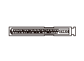
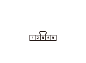

VSA DTC 64
DTC 64:
センサ電源診断
再現テスト
1-1
イグニッション スイッチをON（
II
）にする
1-2
HDSでDTCをクリアする
1-3
イグニッション スイッチをOFFにする
1-4
イグニッション スイッチをON（
II
）にする
1-5
DTCメニュー内のDTCをHDSで確認する
◆ DTC64は表示されているか
YES
-
ステップ
2
へ進む
NO
-
VSAモジュレータ コントロール ユニットと舵角センサ間カプラの一時的な接続不良
SVCCラインの電源短絡点検
2-1
イグニッション スイッチをOFFにする
2-2
VSAモジュレータ コントロール ユニット46Pカプラの接続を外す
2-3
イグニッション スイッチをON（
II
）にする
2-4
VSAモジュレータ コントロール ユニット46PカプラNo.33端子とボディ アース間の電圧を測定する
◆ 1V以上か
YES
-
舵角センサとVSAモジュレータ コントロール ユニット間コードの電源短絡を修理
NO
-
ステップ
3
へ進む

SVCCラインのボディ短絡点検
3-1
イグニッション スイッチをOFFにする
3-2
VSAモジュレータ コントロール ユニット46PカプラNo.33端子とボディ アース間の導通をそれぞれ確認する
◆ 導通があるか
YES
-
舵角センサとVSAモジュレータ コントロール ユニット間コードのボディ短絡を修理
NO
-
ステップ
4
へ進む
再現テスト
4-1
VSAモジュレータ コントロール ユニット46Pカプラを再接続する
4-2
舵角センサ5Pカプラの接続を外す
4-3
イグニッション スイッチをON（
II
）にする
4-4
舵角センサ5PカプラNo.1端子とNo.5端子間の電圧を測定する
◆ 約5V以上か
YES
-
舵角センサ交換
NO
-
ステップ
5
へ進む
VSAモジュレータ コントロール ユニットのプログラムの点検
5-1
すべてのカプラを接続する
5-2
VSAモジュレータ コントロール ユニットのプログラムが最新か確認する
◆ プログラムは最新か
YES
-
VSAモジュレータ コントロール ユニット46Pカプラの接続不良を点検し、異常がなければ
VSAモジュレータ コントロール ユニット交換
NO
-
ステップ
6
へ進む
VSAモジュレータ コントロール ユニットのアップデート
6-1
VSAモジュレータ コントロール ユニットのプログラムを最新のプログラムにアップデートする
6-2
イグニッション スイッチをOFFにする
6-3
イグニッション スイッチをON（
II
）にする
6-4
DTCメニュー内のDTCをHDSで確認する
◆ DTC64は表示されているか
YES
-
VSAモジュレータ コントロール ユニット46Pカプラの接続不良を点検し、異常がなければ
VSAモジュレータ コントロール ユニット交換
NO
-
故障診断完了
